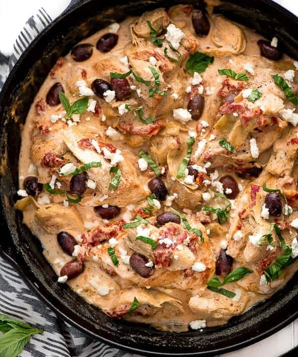

Mediterranean Chicken

Ingredients for mediterranean chicken
- 4 skinned and boned chicken breast halves
- 3 tablespoons all-purpose flour
- 2 tablespoons olive oil
<1i>14 1/2-ounces of chicken broth
- 1/4 cup sliced black olives
- 2 tablespoons capers
- 1/8 teaspoon black pepper
- 1 can of halved artichoke hearts
How to Prepare
- Dredge chicken in flour; set aside.
- Heat olive oil in a large skillet over medium-high heat. Add chicken, and cook 3 minutes on each side or until lightly browned.
- Add chicken broth, black olives, capers, and black pepper. Bring to a boil; reduce heat, and simmer 20 minutes or until thickened and bubbly.
- Stir in artichoke hearts, and cook until mixture is thoroughly heated.
- Yield 4 servings.
Back to Home